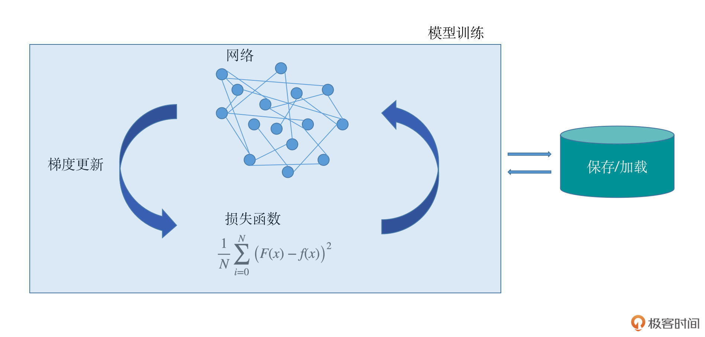
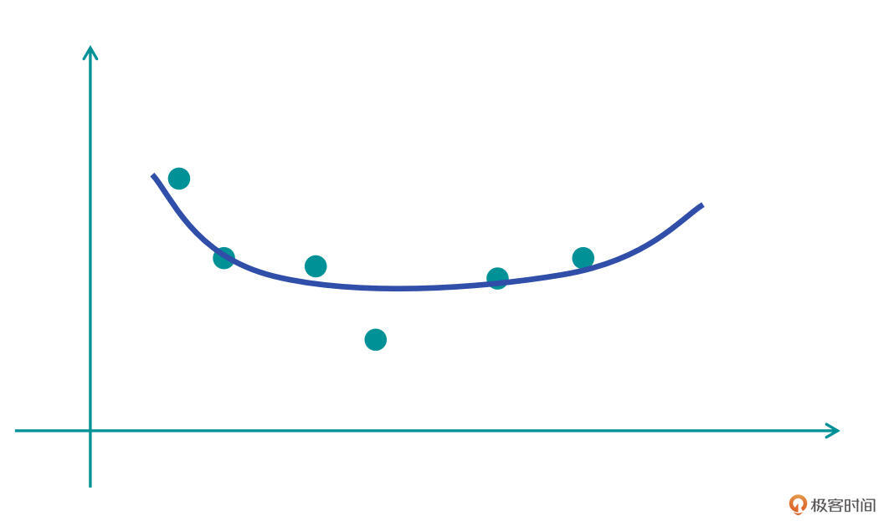
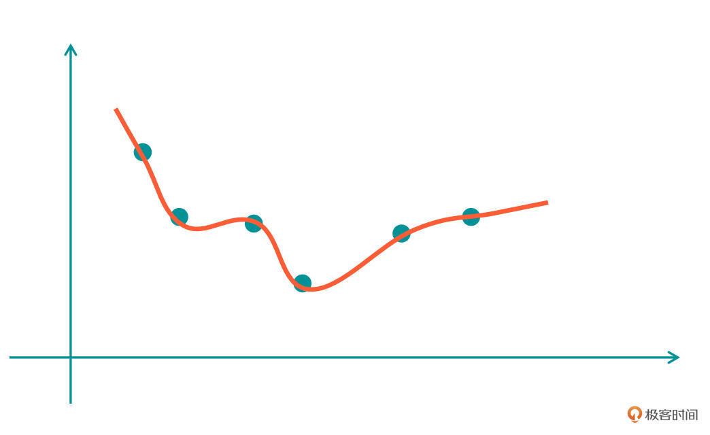
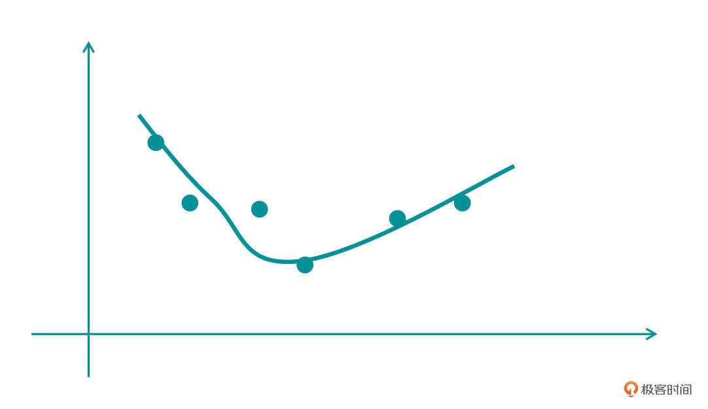

- 00 开篇词 如何高效入门PyTorch？.md.html
- 01 PyTorch：网红中的顶流明星.md.html
- 02 NumPy（上）：核心数据结构详解.md.html
- 03 NumPy（下）：深度学习中的常用操作.md.html
- 04 Tensor：PyTorch中最基础的计算单元.md.html
- 05 Tensor变形记：快速掌握Tensor切分、变形等方法.md.html
- 06 Torchvision（上）：数据读取，训练开始的第一步.md.html
- 07 Torchvision（中）：数据增强，让数据更加多样性.md.html
- 08 Torchvision（下）：其他有趣的功能.md.html
- 09 卷积（上）：如何用卷积为计算机“开天眼”？.md.html
- 10 卷积（下）：如何用卷积为计算机“开天眼”？.md.html
- 11 损失函数：如何帮助模型学会“自省”？.md.html
- 12 计算梯度：网络的前向与反向传播.md.html
- 13 优化方法：更新模型参数的方法.md.html
- 14 构建网络：一站式实现模型搭建与训练.md.html
- 15 可视化工具：如何实现训练的可视化监控？.md.html
- 16 分布式训练：如何加速你的模型训练？.md.html
- 17 图像分类（上）：图像分类原理与图像分类模型.md.html
- 18 图像分类（下）：如何构建一个图像分类模型_.md.html
- 19 图像分割（上）：详解图像分割原理与图像分割模型.md.html
- 20 图像分割（下）：如何构建一个图像分割模型？.md.html
- 21 NLP基础（上）：详解自然语言处理原理与常用算法.md.html
- 22 NLP基础（下）：详解语言模型与注意力机制.md.html
- 23 情感分析：如何使用LSTM进行情感分析？.md.html
- 24 文本分类：如何使用BERT构建文本分类模型？.md.html
- 25 摘要：如何快速实现自动文摘生成？.md.html
- 加餐 机器学习其实就那么几件事.md.html
- 用户故事 Tango：师傅领进门，修行在个人.md.html
- 答疑篇 思考题答案集锦.md.html
- 结束语 人生充满选择，选择与努力同样重要.md.html
- 捐赠
11 损失函数：如何帮助模型学会“自省”？
你好，我是方远。
在前面的课程中，我们一同拿下了深度学习实战所需的预备基础知识，包括PyTorch的基础操作、NumPy、Tensor的特性跟使用方法等，还一起学习了基于Torchvision的数据相关操作与特性。恭喜你走到这里，基础打好以后，我们距离实战关卡又进了一步。
有了基础预备知识，我们就要开始学习深度学习的几个重要的概念了。
一个深度学习项目包括了模型的设计、损失函数的设计、梯度更新的方法、模型的保存与加载、模型的训练过程等几个主要模块。每个模块都在整个深度学习项目搭建中意义重大，我特意为你画了一个示意图，方便你整体把握它们的功能。

这节课咱们先从损失函数开始说起。损失函数是一把衡量模型学习效果的尺子，甚至可以说，训练模型的过程，实际就是优化损失函数的过程。如果你去面试机器学习岗位，常常会被问到前向传播、神经网络等内容，其实这些知识的考察都不可避免地会涉及到损失函数的相关概念。
今天，我就从识别劳斯莱斯这个例子，带你了解损失函数的工作原理和常见类型。
一个简单的例子
回想一下我们学习新知识的大致过程，比如现在让你背一个单词，我举一个夸张的例子：
Pneumonoultramicroscopicsilicovolcanoconiosis（矽肺病）。
为了背会这个单词，你要反复地去看去记，第一次可能记住了开头的几个字母，第二次又记住了中间的几个字母，第三次又记住了结尾的几个字母，然后不断地反复学习，才能掌握这个单词的准确组成。为了检验你的学习成果，老师还会让你默写单词，跟标准拼写进行对照。
刚才的例子用的是自然语言，那么如果视觉问题呢？比如我现在给你一个劳斯莱斯汽车的照片，让你记住，这就是这辈子都买不起的劳斯莱斯。
你会怎么去记住它呢？对，你会下意识去寻找最具有代表性的内容，比如车前脸的方形格栅、车前面的立起来的小金人，方方正正的车体等。
等你以后见到了有了具有以上特征的汽车，你就知道，它是你要躲远点的劳斯莱斯了。不过呢，如果这些特征发生了变化，你又要犹豫或者怀疑它是不是别的品牌的汽车了。
其实，模型的学习也是一样的，模型最开始的时候就是一张白纸，它什么都不知道。我们作为研发人员，就要不断地给模型提供要学习的数据。
模型拿到数据之后就要有一个非常重要的环节：把模型自己的判断结果和数据真实的情况做比较。如果偏差或者差异特别大，那么模型就要去纠正自己的判断，用某种方式去减少这种偏差，然后反复这个过程，直到最后模型能够对数据进行正确的判断。
衡量这种偏差的方式很重要，也是模型学习进步的关键所在。这种减少偏差的过程，我们称之为拟合。接下来我们一同看看拟合的几种情况。
过拟合与欠拟合
我们先来学习第一组概念，也就是过拟合和欠拟合。为了方便你理解，我们结合函数曲线的例子来看看。
首先假设在一个二维坐标系中有若干个点，我们需要让一个函数（模型）通过学习去尽可能地拟合这些点。那么拟合的结果都有哪几种可能呢？我们看看下面的图片：

在第一张图中，蓝色的曲线是我们学习到的第一个模型函数（H1）。我们发现，H1好像没有很好地学习到这些点的拟合，或者说，函数跟样本点的拟合效果较差，只有一个大致符合的趋势。这种情况，我们称之为“欠拟合”。

既然有“欠”就有“过”，我们继续看第二张图。
在这张图中，红色的曲线是我们学习到的第二个模型函数（H2），在这个结果上，我们看到函数曲线可以很好地拟合所有的点。
但是，这里存在两个问题：第一，曲线对应的函数有点太过复杂了，不像H1那样简单明了；第二，如果我们在H2的曲线附近再增加一个点，这条H2对应的曲线就很难去拟合好。这种情况就叫做“过拟合”，实在是太过了。

那么我们再来看第三张图，这张图的曲线就比较靠谱了，这个函数不是太复杂，同时也能较好拟合绝大部分的点。
看到这里，你可能会有疑惑，为什么我们会如此的在意“复杂”这个问题呢？其实你可以这样想，有这样两个函数：\(y1=3x^2 + 2\)，\(y2=3x^7 + 7x^6 + 6x^2 + 4x+18\)。y1无论是从可解释性上，还是在简洁程度、计算量方面，都要比y2好得多。
越复杂的函数，在实际工作中就需要越多的计算资源和时间消耗。当然了，我们也不能一味的追求简单，否则就会欠拟合。
损失函数与代价函数
过拟合和欠拟合的概念实际上就是模型的表现效果。接下来，我们再来看看损失函数和代价函数，这组概念就是我们刚才说用来衡量“偏差”、“效果”的方法。
我们还是延续之前的思路，用函数举例子。假设刚才的二维空间中，任意一个点对应的真实函数为F(x)。我们通过模型的学习拟合出来的函数为f(x)。根据刚才提到的学习过程，我们会知道F(x)和f(x)之间存在一个误差，我们定义为L(x)，于是有：
\[- L(x)=(F(x)-f(x))^{2}- \]
这里F(x)和f(x)的差距我们做了一个平方和，是为了保证两者的误差是一个正值，方便后续的计算。当然，你也可以做成绝对值的形式，后面课程里我们还会讲到梯度更新，那时你就会发现，平方和要比绝对值更为方便。这里你先有个印象就好，让我们言归正传。
有了L(x)，我们就有了一个评价拟合函数表现效果“好坏”的度量指标，这个指标函数我们称作损失函数（loss fuction)。根据公式可知，损失函数越小，拟合函数对于真实情况的拟合效果就越好。这里有一点需要你注意，损失函数的种类有很多种，L(x)只是我们学习到的第一个损失函数。
接下来，我们将数据从刚才的任意一个点，扩大到所有的点，那么这些点实际上就是一个训练集合。把集合所有的点对应的拟合误差做平均，就会得到如下公式：
\[- \\frac{1}{N} \\sum\_{i=0}^{N}(F(x)-f(x))^{2}- \]
这个函数叫做代价函数（cost function），即在训练样本集合上，所有样本的拟合误差的平均值。代价函数我们也称作经验风险。
其实，在实际的应用中，我们并不会严格区分损失函数和代价函数。你只需要知道，损失函数是单个样本点的误差，代价函数是所有样本点的误差。明白了这些，你哪怕混着叫，也没什么问题。
常见损失函数
在了解了损失函数的定义之后，我们来看一下常用的损失函数都有哪些。
其实，严格来说，损失函数的种类是无穷多的。这是因为损失函数是用来度量模型拟合效果和真实值之间的差距，而度量方式要根据问题的特点或者需要优化的方面具体定制，所以损失函数的种类是无穷无尽的。
作为初学者，我推荐你从一些常用的损失函数做开始学习。今天我们一块来看看5种最基本的损失函数。
0-1损失函数
假定我们要一个判断类型的问题，比如让模型判断用户输入的文字是不是数字。那么模型判断的结果只有两种：是和不是。
于是，我们很容易就会想到一个最为简单的评估方式：如果模型预测对了，损失函数的值就为0，因为没有误差；如果模型预测错了，那么损失函数的值就为1。这就是最简单的0-1损失函数，这个函数的公式表示如下：
\[- L(F(x), f(x)) = \\left\\{\\begin{matrix}- 0 & if F(x) \\ne f(x)\\\\\\- 1 & if F(x) = f(x)- \\end{matrix}\\right.- \]
其中，F(x)是输入数据的真实类别，f(x)是模型预测的类别。是不是很简单？
但是，0-1损失函数的使用频率是非常少的，这是为什么呢？因为模型训练中经常用到的梯度更新和反向传播都需要能够求导的损失函数，可是0-1损失函数的导数值是0（常数的导数为0），所以它应用不多。
尽管如此，我们也一定要了解0-1损失函数，因为它是最简单的损失函数，有着很重要的意义。
平方损失函数
前面讲损失函数的定义时，我们曾举了一个例子\(L(x)=(F(x)-f(x))^{2}\)，这个函数的正式名称叫做平方损失函数。有时候，我们会在损失函数中加入一个1/2的系数，这是为了求导的时候能够跟平方项的系数约掉。
平方损失函数是可求导的损失函数中最简单的一种，它直接度量了模型拟合结果和真实结果之间的距离。在实际项目中，很多简单的问题，比如手写分类、花卉识别等，都可以使用这种简单的损失函数。
均方差损失函数和平均绝对误差损失函数
在正式讲解均方差损失函数之前，我们先补充一个重要的背景知识：机器学习分为有监督学习和无监督学习两大类。
其中有监督学习是从标签化训练数据集中，推断出函数的机器学习任务，也就是说：模型通过标注好的数据，就像一个学生（模型）一样，被老师（数据）“指导”和“监督”着去学习。有监督学习问题主要可以划分为两类，分类和回归。其中回归问题是根据数据预测一个数值。
而均方误差（Mean Squared Error，MSE）是回归问题损失函数中最常用的一个，也称作L2损失函数。它是预测值与目标值之间差值的平方和。它的定义如下：
\[- M S E=\\frac{\\sum\_{i=1}^{n}\\left(s\_{i}-y\_{i}^{p}\\right)^{2}}{n}- \]
其中s为目标值的向量表示，y为预测值的向量表示。
细心的你会发现，平方损失函数好像也是差不多一个样子呀？没错，这两种形式本质上是等价的。只是MSE计算得到的值是把整个样本的误差做了平均，也就是加起来之后除了一个n。误差平方和以及均方差的公式中有系数1/2，这是为了求导后，系数被约去。
而平均绝对误差损失函数（Mean Absolute Error, MAE）是另一种常用于回归问题的损失函数，它的目标是度量真实值和预测值差异的绝对值之和，定义如下：
\[- M A E=\\frac{\\sum\_{i=1}^{n}\\left|y\_{i}-y\_{i}^{p}\\right|}{n}- \]
交叉熵损失函数
接下来，我们再了解一下交叉熵损失函数。
熵这个概念有的小伙伴可能有些陌生，跟刚才一样，让我们先来简单了解一下什么是熵。熵最开始是物理学中的一个术语，它表示了一个系统的混乱程度或者说无序程度。如果一个系统越混乱，那么它的熵越大。
后来，信息论创始人香农把这个概念引申到信道通信的过程中，开创了信息论，所以这里的熵又称为信息熵。信息熵的公式化可以表示为：
\[- H§=-\\sum\_{i} p\\left(x\_{i}\\right) \\log p\\left(x\_{i}\\right)- \]
其中，x表示随机变量，与之相对应的是所有可能输出的集合。P(x)表示输出概率函数。变量的不确定性越大，熵也就越大，把变量搞清楚所需要的信息量也就越大。
当我们将函数变为如下格式，将log p改为log q，即：
\[- \-\\sum\_{i=1}^{n} p\\left(x\_{i}\\right) \\log \\left(q\\left(x\_{i}\\right)\\right)- \]
其中，𝑝(𝑥)表示真实概率分布，𝑞(𝑥)表示预测概率分布。这个函数就是交叉熵损失函数（Cross entropy loss）。也就意味着，这个公式同时衡量了真实概率分布和预测概率分布两方面。所以，这个函数实际上就是通过衡量并不断去尝试缩小两个概率分布的误差，使预测的概率分布尽可能达到真实概率分布。
softmax损失函数
softmax是深度学习中使用非常频繁的一个函数。在某些场景下，一些数值大小范围分布非常广，而为了方便计算，或者使梯度更好的更新（后续我们还会学习梯度更新），我们需要把输入的这些数值映射为0-1之间的实数，并且归一化后能够保证几个数的和为1。
它的公式化表示为：- $\(- S\_{j}=\\frac{e^{a\_{j}}}{\\sum\_{k=1}^{T} e^{a\_{k}}}- \)$
回到刚才的交叉熵损失函数，公式中的q(xi)，也就是预测的概率分布，如果我们换成softmax方式的表示，即：
\[\\sum\_{i=1}^{n}p(x\_i)log(S\_i)\]
之后我们就得到了一个成为softmax损失函数（softmax loss）的新函数，也称为softmax with cross-entropy loss，它是交叉熵损失函数的一个特例。
损失函数的种类非常多，这里我选择了最常用的几种。咱们在后续的实战环节，将会遇到更多的损失函数，到时候我再为你详细展开。
小结
这节课我们一同学习了损失函数的原理。对于模型来说，损失函数就是一个衡量其效果表现的尺子，有了这把尺子，模型就知道了自己在学习过程中是否有偏差，以及偏差到底有多大，从而做到“三省吾身”。
今天所讲的公式虽然数量不少，但并不需要你背下来。我想提醒你的是，这些公式有必要先过一遍，有了基本的理解，才能知道原理。否则，没有这些公式做基础，后面你根本无法区分不同的损失函数。
在实际的研发中，损失函数的设定是非常重要的，其地位甚至比得上模型网络设计。因为如果没有好的损失函数做指导的话，一切的功夫都白做了。就比如我们做最简单的手写体识别，损失函数每次计算模型和真实值的区别，通过这个损失函数，我们的模型才能知道自己学对了还是学错了，才能真正的有效学习。
后面咱们就要开始学习如何通过损失函数来更新模型参数的方法了，这也是非常有意思的一个话题，敬请期待。
每课一练
损失函数的值越小越好么？
欢迎你在留言区跟我交流互动，也推荐你把今天的内容分享给更多同事，朋友。
我是方远，我们下节课见！
© 2019 - 2023 Liangliang Lee. Powered by gin and hexo-theme-book.